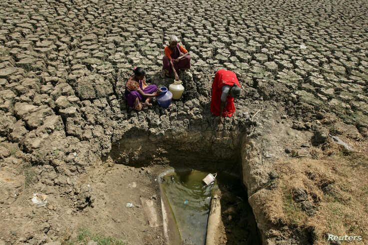
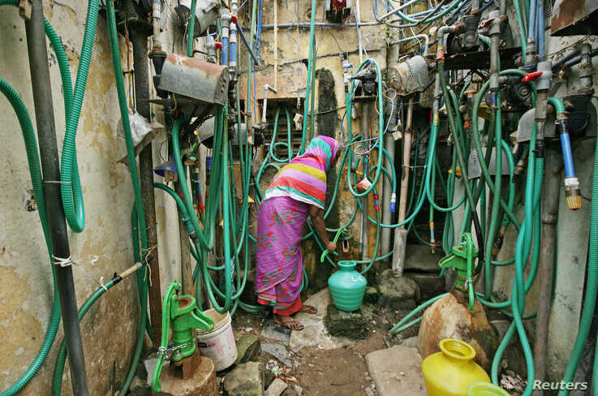

India launched a nationwide water conservation campaign Monday to address a serious water crisis that has gripped at least half the country. The program will focus on replenishing water resources in severely stressed districts where access to drinking water has become a challenge for millions and drought has devastated vast stretches.
Red flags have been raised over the dangerous drop in ground water levels in large parts of India. Urban areas are also reeling under a crisis — the country’s sixth most populous city, Chennai, ran out of water this summer. Erratic rainfall patterns blamed on climate change have exacerbated the problem.

Warning that per capita water availability is falling rapidly, Water Resources Minister Gajendra Singh Shekawat pointed out that India only conserves 8 % of rainwater. “We need to make conservation a people’s initiative. It has to be about changing mindsets and people’s behavior,” he said.
The campaign is being called the “water movement.” Over the next three months, the government will involve village bodies, voluntary groups, students and engineers in a community-based effort to revive traditional water bodies such as ponds and lakes that helped conserve rain water but fell into disuse and dried up over the years. The aim: to raise the water table.
Wasteful use of water by farmers who pump out ground water to irrigate their crops is blamed for the rapidly diminishing water table. In cities also, millions of residents dig borewells to supplement erratic municipal supplies.
India will launch efforts to persuade farmers to shift from cultivating water guzzling crops such as paddy and sugar that have become popular because they are more profitable to those that need less water such as maize.

Over 12% of India's population — more than 160 million people — live under "Day Zero" conditions, with no access to clean water near their home, according to a 2018 report by WaterAid. That number will grow significantly in coming years.
The problem has worsened this summer due to a searing heat wave and delay in monsoon rains in several parts of the country — it has been the driest June in five years and nearly 40 percent of India is facing a drought. Monsoon rains that fall from June to September are the main source of water for India.